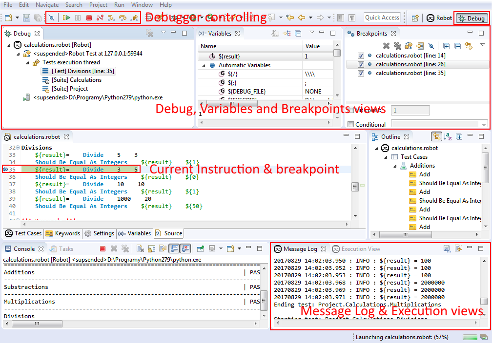

User interface
Debug perspective looks as follows:

Major parts of this perspective are:
- Controller toolbar from which user can perform stepping
as well as resuming, suspending, terminating and disconnecting from running tests (see
Controlling execution). It is also possible to deactivate all the breakpoints
globally using Skip All Breakpoints button.
- Execution and Message Log views described here.
- Debug view where currently launched session is visible. When suspended
there is a stack presented showing current path to root in suites execution tree.
- Variables view presenting variables bounded with selected stack frame from Debug view. It is also
possible to edit values of those variables (see Changing variables).
- Breakpoints view gathering all the breakpoints defined in users workspace. It allows to edit
as well as enable/disable the breakpoints - see Breakpoints.
- editor area; when execution suspends and user opens stack frames in Debug view the source code
related to selected frame is shown in editor. There is a current line highlighted and also other execution
related information (see Hitting a breakpoint).